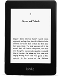

How to download and install the e-books
Welcome to the third release of the ministry of the recovery and Hymns and Spiritual Songs (1962) [English, Deutsch & Dutch... Italiano in progress] for e-readers. Please use the links on this page to buy your Kindle, as this generates a little revenue that helps pay for the hosting for this site!
There are two formats available, supporting all the most common reader devices:
- EPUB Suitable for many readers, including Apple's iBooks which works a treat on iPad, iPhone and iPod Touch [ Ministry | Hymns ]
- MOBI Specifically for the Amazon Kindle, although it will work on many other devices too [ Ministry | Hymns ]
Don't have a reader and don't know which one to get? Here's a comparison of the iPad 1 with the Kindle 3.
If you're regularly travelling or commuting and want to read the ministry on the move, I recommend the Kindle. Buy one direct from Amazon UK or Amazon US.
There are several Kindles to consider; I would recommend the Kindle Paperwhite Wi-fi (£109) and here's why:
| Model | Price | Screen | Comments |
|---|---|---|---|
| Kindle Paperwhite Wi-fi | £109 | Backlit e-ink | Great all-rounder. Light, compact and fast! If you want to buy a book from Amazon, you need to be connected to Wi-fi (eg in your hotel room). If you are mainly using it for the ministry that will be perfect - this is the one for you. |
| Kindle Paperwhite 3G | £169 | Backlit e-ink | The 3G element is a bit like a mobile phone, so the Touch 3G is heavier and more expensive. If you think you're likely to want to buy a book in the doctor's surgery or on a beach, maybe you should consider this. If not, get the Wi-fi. |
| Kindle Fire HD 7” | from £119 | Colour | Tablet, more like an iPad. It also reads books but the screen doesn't work as well in bright daylight. The Fire is for people who want apps and games as well as reading. |
| Kindle Fire HDX 7” | from £199 | Colour |
If you'd like to read more, or investigate for yourself, start by reading about EPUB-compatible e-readers.
So you've bought a reader and want to read the ministry on it?
Easy! Follow the simple steps below!
- Kindle
- Apple iPad, iPhone or iPod Touch
- Google Nexus 7 (and other Android-based devices)
Amazon Kindle
- Download the MOBI format ministry (now available MOBI format Hymns too!)
- Unzip the file on your Desktop - it should create a single "ministry" folder with subfolders for servants
- Attach your Kindle via the supplied USB cable
- Drag the ministry folder that you created and drop it onto the documents folder on Kindle drive or device (the ministry has to sit underneath the documents folder)
- Wait for the files to copy, then disconnect the Kindle
- When it powers up, you should see all the ministry! If not, email Support!
Apple iPad, iPhone or iPod Touch
The great thing about iTunes is that once you have the Books on your computer, you can sync the whole lot to all three of these devices (if you own more than one) and it actually works pretty well on them all.
Pre-requisite: Download iTunes 12.
Now you're ready to download and install the ebooks:
- Download the EPUB format ministry (now available EPUB format Hymns too!)
- Unzip the file on your Desktop - it should create a single "ministry" folder with all the epub files inside
- Fire up iTunes
- Drag the "ministry" folder onto iTunes (you should see the progress bar at the top as it copies the books)
- If you look under "Books" you will see all the ministry — which you can read within iBooks on the Mac/PC if you wish
- Now attach your first device (e.g. iPad or iPhone) and wait for iTunes to recognise it
- In the new version of iTunes, your device will appear at the top of the screen, top left, just left of the ellipsis (...) and if you have several devices attached (e.g. over Wifi), the dropdown list will contain each one, just click on the first device
- Look down the left Summary, Apps... Books! Click on Books
- Tick Sync Books checkbox and leave “All books” radio button selected
- Click the Sync button at the bottom and wait!
- After sync'ing, go to your device (disconnect if using a cable), push the iBooks app and you should see all the ministry! If not, email Support!
- (Repeat steps 7 - 12 if you have another Apple device sync'd with iTunes)
Google Nexus 7, Hudl (and other Android-based devices)
- Download the EPUB format ministry (now available EPUB format Hymns too!)
- Unzip the file on your Desktop — it should create a single "ministry"
- Connect your Android device by USB cable and it will appear as a new drive
- Drag the ministry folder from your Desktop to the new drive that appeared
- While the files are copying, go to the Play store on your Android device and search for Aldiko.
- Install Aldiko and Open
- Once all the files have copied to the device, you can Import them into Aldiko by clicking on the menu at the top left, select Files
- Browse to the ministry folder, then at the top right tap Select All
- The menu option changes to Import, tap this
- Aldiko will import all the volumes in two or three minutes
Frequently Asked Questions
- Are the Indexes available as ebooks?
No. Some of these volumes are still Copyrighted.
- Can I get the Bible for my ereader?
Yes...
- Kindle? Try our new JND Bible for Kindle. If you have a Paperwhite 2 or newer, Footnotes are not always working correctly... we're working on it.
- All other devices? — We would recommend that you download Bible specific software - which works far better as a concordance and reader. The best Bible software is definitely Olive Tree, and you can run it on any of the above platforms. Even better: it's free! (Software and Darby & KJV Bibles)
- How can I relate the page numbers in the ebook to the physical page numbers?
There isn't currently a way of doing this. I have thought about adding an index page to each volume with the links to the physical page numbers.
- I have found mistakes in the text from the scanning process... how do I let you know?
Simple! Send an email to support@goodteaching.org and you will receive an automated reply with a ticket number. Once the mistake has been corrected you will receive a reply.
- Subject — Please include the volume in the Subject line (e.g. JND V45)
- Body — Please re-type a portion of the incorrect text so that we can find it in the volume, and then add the correction. We will confirm against the original printed volume.
- It would be helpful if you would send an individual email for each mistake, even if they are in the same volume. The automated ticket system assigns each one a number so it's easy to track.
- We will release a new “build” of the ebooks once a year with the corrections.
Downloads
- Ministry [MOBI (Kindle)] [EPUB (Apple)]
- 1962 Hymns [MOBI (Kindle)] [EPUB (Apple)]
- JND Bible [MOBI (Kindle)]
- Christ as Seen in the Offerings (Kingscote) [MOBI (Kindle)] [EPUB (Apple)]
Happy reading... may it be for our spiritual growth and result in the acquisition of spiritual substance.